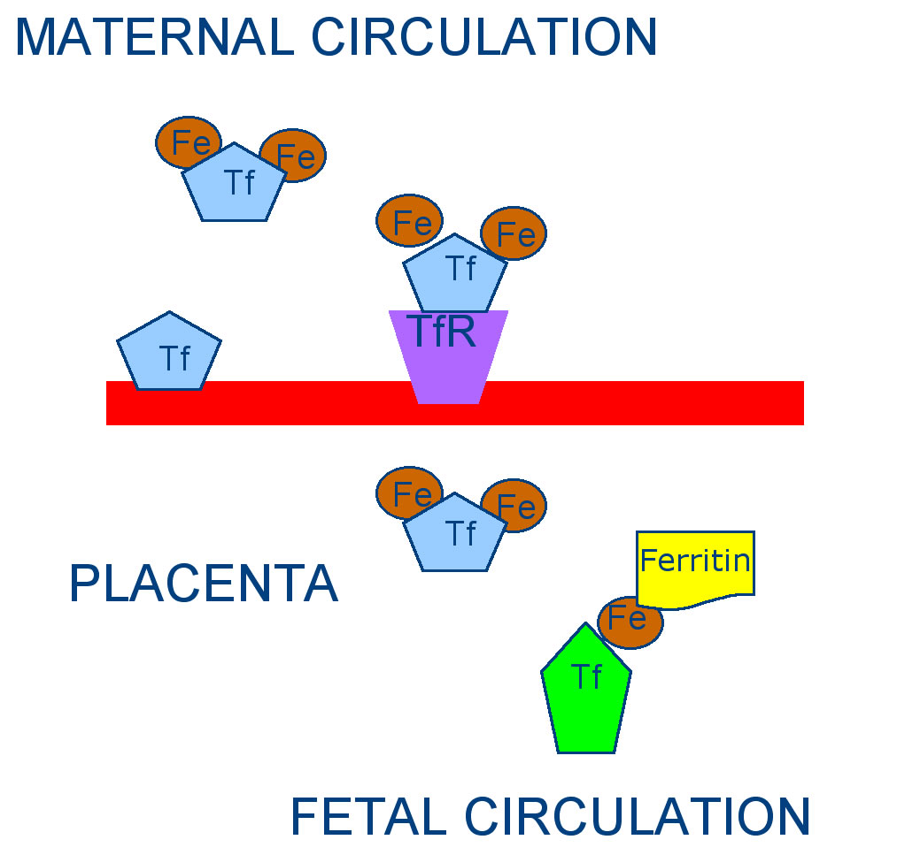

| METALS IN MEDICINE AND THE ENVIRONMENT | |||
| Metals | Iron Regulation in Pregnancy | ||
Cause of Iron Deficiency During Pregnancy During pregnancy the volume of blood in maternal circulation must increase concordantly with the growth of the fetus and the need for a fetal circulation system (5). Between 600 mg and 1 g of iron is required to accommodate this change (2). As a consequence of this, iron is depleted from maternal resources (blood levels and stores) to provide sufficient levels for the fetus. Once the maternal sources have been depleted the mother may enter a state of iron deficiency that can progress to anemia. Anemia Iron deficiency is defined as “low serum ferritin and sparse or absent stainable iron in bone marrow” (1). Numerous studies have shown detrimental effects to mother and fetus when iron is deficient. These effects include but are not limited to: maternal and fetal morbidity, low birth weight, decrease in duration of pregnancy, lower Apgar scores during labor, and increased risk of cardiovascular disease in adulthood (1,2). The World Health Organization reports that 35% to 75% of pregnant women in developing countries and 18% of pregnant women in industrialized countries are anemic with approximately 43% of women being anemic before they become pregnant (9). Iron Supplementation Iron supplementation during pregnancy to prevent iron deficiency can be an effective means to prevent some of the previous mentioned problems (1). However it has been hard to quantify the benefits due to confounding factors such as maternal iron status prior to pregnancy (as the symptoms don’t show until late in pregnancy) and the number of previous pregnancies. The WHO recommends that pregnant women in areas with a “high prevalence of malnutrition” should be given iron supplementation at a dose of 60 mg per day for six months to prevent and treat iron deficiency anemia. WHO suggests in areas where the prevalence of anemia is more than 40% that supplementation continues for three months after the delivery of the child (9). Mechanism of Iron Transfer from Mother to Fetus Iron has to be transferred from the mother to the fetus via the placenta and this transfer can not be reversed (7). Iron bound to transferrin (Tf), an iron transport protein, as diferric transferrin is taken up in the maternal circulation and targeted to transferrin receptors (TfR) on the apical surface of the placental syncytiotrophoblast. The Tf (with iron) is taken into the cells and the iron is released resulting in the production of a maternal apotransferrin which is returned to maternal circulation. The iron released into the placental cells is captured by ferritin, an iron storage protein, and is transferred to available fetal apotransferrin and exits into the fetal circulation as holotransferrin (1).  Regulation of Placental Iron Transfer It is believed that rates of iron transfer from mother to fetus are controlled by the placenta. Studies have shown that when the fetus is removed but the placenta remains the amount of iron taken up from maternal circulation remains the same suggesting the presence of the fetus has little effect on iron uptake (8). It is thought that the placenta controls iron transfer by regulating the number of transferrin receptors on the materal circulation facing side of the placenta (7). Although it is known that the functions of the placenta are controlled by cytokines, the exact mechanism of how TfR increase is regulated is not known (5). TNF-alpha is a cytokine that is suspected to regulate the number of transferrin receptors on the maternal side of the placenta. Studies have shown that TNF-alpha can induce apoptosis of placental cells and high levels of TNF-alpha have been found in placentas of early to midstage failed pregnancies (5). Another study has shown that iron supplementation can increase TNF-alpha production while the presence of an iron chelator can decrease production of TNF-alpha (6). This suggests that TNF-alpha regulates TfR levels in counter-intuitive manner, wherein decreases in available iron decrease levels of TNF-alpha and increase levels of TfR. The exact mechanism by which this is accomplished remains unknown. References (1) Allen, L.H. Anemia and iron deficiency: effects on pregnancy outcome. The American Journal of Clinical Nutrition 71, 1280S-12841S (2000). (2) Gambling, L., Danzeisen, R., Fosset, C., Ansersen, H.S., Dunford, S., Kaila, S., Srai, S., McArdle, H.J. Iron and copper interactions in development and the effct of pregnancy outcome. The Journal of Nutrition 133, 1554S-1556S (2003). (3) Killip, S., Bennet, J.M., Chambers, M.D. Iron deficiency anemia. American Family Physician 75, 671-682 (2007). (4) Lewis, R.M., Doherty, C.B., Burton, G.J., Hales, C.N. Effects of maternal iron restriction on placental vascularization in the rat. Placenta 22, 534-539 (2001). (5) McArdle, H.J., Danzeisen, R., Fosset, C., Gambling, L. The role of placenta in iron transfer from mother to fetus and the relationship between iron status and fetal outcome. BioMetals 16, 161-167 (2003). (6) Scaccabarozzi, A., Arosio, P., Weiss, G., Dongiovanni, P., Franzani, A.L., Mattiolo, M., Levi, S., Fiorello, G.F. Relationship between TNF-alpha and iron metabolism in differentiating human monocytic THP-1 cells. British Journal of Haematology 110, 978-984 (2000). (7) Srai, S.K., Momford, A., McArdle, H.J. Iron transport across cell membranes: molecular understanding of duodenal and placental iron uptake. Best Practice and Research Clinical Haematology 15, 243-259 (2002). (8) Wong, C.T., McArdle, H.J., Morgan, E.H. Effect or iron chelators on placental uptake and transfer of iron in rat. American Journal of Physiology15, 243-259 (1987). (9) http://www.who.int/making_pregnancy_safer/en Author: Sara Dudgeon |
|||
| Topics | |||
|
|||